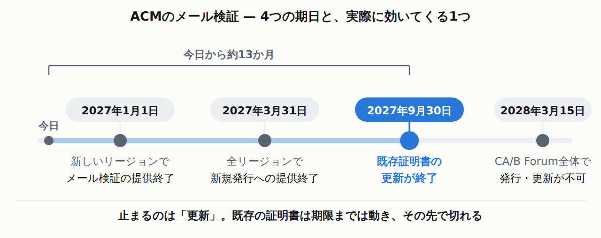
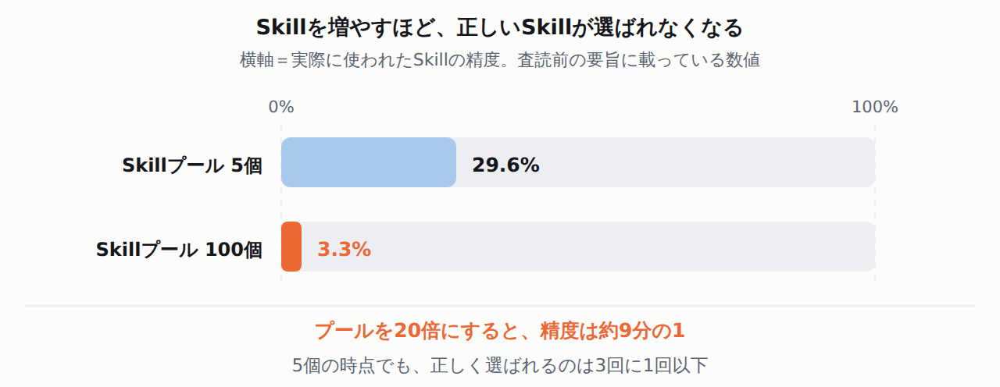

NVIDIAの1050億ドルは、OpenAIに直接渡る資金ではない。SEC提出書類の契約相手は貸主のSB EnergyNVIDIA自身はこの仕組みを「credit support(信用供与)」と呼んでいますが、契約(残存価値保証)の相手はSB Energyです。8-K本文に「OpenAI has agreed to reimburse and indemnify NVIDIA for any and all amounts actually paid by NVIDIA to the Lessor」とあり、NVIDIAが払った分はOpenAIが戻す契約です。ただし発動条件はOpenAIの不払い・破綻時なので、そのとき補償がどこまで実効性を持つかは書類だけでは分かりません。
🧰 実務者向けのAI開発ツール3件
Anthropic
Claude Consoleの旧Workbenchは昨日で終了 — 保存したプロンプト・変数・evalは新画面に引き継がれない
8/17失効✓ 公式確認済⚠ 提供終了Claude Console
Workbenchは、ブラウザ上でプロンプトを試せるAnthropicの管理画面です。その旧版が2026年8月17日でアクセス終了しました。原文は「The legacy Workbench (platform.claude.com/workbench) in the Claude Console is being sunset with access ending on August 17, 2026.」
移行先はplatform.claude.com/playgroundです。ただし同じ文の続きが本題になります。「Saved prompts, variables, and evals are not supported in the updated Workbench」——保存済みのプロンプト・変数・評価は、新しい画面では扱われません。
実験的なプロンプトAPIも同時に廃止。原文は「The experimental prompt tools APIs for generating, improving, and templatizing prompts (/v1/experimental/generate_prompt, /v1/experimental/improve_prompt, and /v1/experimental/templatize_prompt) are being retired along with the Workbench on August 17, 2026.」
削除後は「エラーが返る」と明記されている。「After removal, requests to these endpoints will return an error.」静かに無視されるのではなく落ちます。APIとは、プログラム同士が決まった形でやり取りするための窓口のことです。エンドポイントはその窓口ごとのURLを指します。これらのエンドポイントを社内ツールから叩いているなら、今日から壊れている可能性があります。
Cursor(Anysphere)が、リポジトリ・プルリクエスト・コード閲覧・GitHub同期を持つホスティングを出しました。リポジトリはコードを保存しておく置き場、プルリクエスト(PR)は「この変更を取り込んでください」とレビューを依頼する仕組みのことです。原文は「Origin begins rolling out today in early beta on all paid plans. We're starting with the essentials, designed for agent scale: repos, pull requests, code browsing, and GitHub sync. Agent-native features ship soon.」
いきなりGitHubから引っ越す話ではありません。「Pull requests on synced repos sync both ways: comment in Cursor and it posts to GitHub, react or reply on GitHub and it shows up in Cursor within seconds.」——双方向に同期します。
配布は既定でオン。原文は「Origin is rolling out in early beta to all paid plan users starting today, except enterprise orgs whose admins opt out.」Enterprise組織の管理者が明示的にopt-outしない限り、有料プランの利用者には配られます。ソースコードの置き場が増えることになるので、社内規程がある会社は判断が要ります。
「Agent-native features ship soon」は、まだ来ていない。公式が「essentials」として挙げているのはリポジトリ・PR・コード閲覧・GitHub同期です(Vercel・Depot・Buildkiteとの連携はすでに利用可能)。エージェント前提の機能はこれからで、まだ来ていません。
changelogの原文はこうです。「Deprecation announcement: The following image generation models are being deprecated and will be shut down on August 17, 2026: imagen-4.0-generate-001 / imagen-4.0-ultra-generate-001 / imagen-4.0-fast-generate-001」
公式のdeprecationsページを別途取得して確認しました。3モデルとも推奨移行先はgemini-3.1-flash-imageです。ページの表に「imagen-4.0-generate-001 | June 24, 2025 | August 17, 2026 | gemini-3.1-flash-image」のように、Recommended replacementの列として明記されています。
Wiz Researchの報告です。原文はこうです。「Wiz Red Agent identified a script injection vulnerability in snowflakedb/snowflake-connector-net. The issue allowed an unauthenticated user to execute arbitrary commands within a GitHub Actions runner by opening a GitHub issue with a specially crafted title.」
The merged PR replaced the repository's
sanitized input pattern with direct
string expansion, yet GitHub's
AI-assisted security review did not
flag the resulting critical
vulnerability.
一見するとsedでエスケープ(記号を無害な文字列として扱わせる処理)しているので安全に見えます。順番が逆です。原文は「The sed escaping runs after GitHub's template expansion, a single quote in the title breaks out of echo '...' and allows arbitrary command execution.」
GitHub Docs「Security hardening for GitHub Actions」— 原文
Use an intermediate environment
variable - For inline scripts, the
preferred approach to handling
untrusted input is to set the value of
the expression to an intermediate
environment variable.
GitHub Docsが示している書き方
- name: Check PR title
env:
TITLE: ${{ github.event.pull_request.title }}
run: |
if [[ "$TITLE" =~ ^octocat ]]; then
正解。Wiz Researchの原文はこうです。「on issues events, github.event.pull_request is always null. So the condition reduces to (null != 'whitesource-for-github-com[bot]'). This is always true, and every GitHub user passes the gate.」ペイロードとは、そのイベントが運んでくるデータの中身のことです。issuesイベントのペイロードにpull_requestは入っていません。存在しないフィールドを!=で比較しているので、条件は必ず成立します。「if:が書いてある＝絞られている」と読むと外します。読むべきは、そのイベントのペイロードにそのフィールドが実在するかどうかです。
今日のうちに終わる点検はこの3つです。0 / 3
🎉 「AIが直したから安全」を前提にしない状態になりました
この記事が言っていないこと
誰がそのPRを書いたか
Wiz Researchの本文には「The final squash commit credits "Copilot Autofix powered by AI" as a co-author.」という記載があり、「an AI "autofix" commit created the very injection vector」とも書かれています。一方で、Wiz自身が2026年8月17日19:57 UTCに追記した更新注記には「It's unclear whether the code-change was AI-assisted」ともあります。共著者としての表示と、Wiz自身による「不明」という留保が両方存在するため、本記事の見出しは「AIレビューが見逃した」という確実な部分に絞り、「AIが書いた」と断定はしていません。
原文はこうです。「AWS Certificate Manager (ACM) will discontinue support for email-validated public certificates by September 30, 2027. If you use email validation for your ACM public certificates, you need to migrate to DNS validation before that date.」

効いてくるのは3番目。既存証明書の「更新」が止まると、有効期限が来た時点でHTTPSが切れる
期日
何が終わるか
2027年1月1日
新しいAWSリージョンで、メール検証の新規提供を終了
2027年3月31日
全リージョンで、新規証明書へのメール検証提供を終了
2027年9月30日
メール検証を使う既存証明書の更新を終了
2028年3月15日
CA/B Forum全体でメール検証による発行・更新が不可(発行済みは有効期限まで有効)
最後の1行はAWSの都合ではありません。CA/B Forumは、認証局とブラウザベンダーが証明書の運用ルールを決めている業界団体です。原文は「In November 2025, they voted to end support for email-based domain validation effective March 15, 2028.」——業界全体の決定なので、AWS以外に移しても同じ話になります。
移行手順そのものは短いです。ただし時間制限があります。
AWS Security Blog — 移行手順(原文)
When you update a certificate to DNS
validation, ACM provides a CNAME record
to add to your DNS configuration, and
you have 72 hours to add that record.
During this window, the certificate
continues to function normally on email
validation.
切り替え中もHTTPSは切れない。原文に「During this window, the certificate continues to function normally on email validation.」とあります。CNAMEを足すまでの間、メール検証のまま動き続けます。ダウンタイムを心配して先延ばしする理由にはなりません。
原文は「Amazon Web Services (AWS) is gradually introducing updates to the AWS Sign-In and sign-up experience to a limited number of customers.」一部の顧客に段階的に、と書かれているだけで、完了期日はありません。
点検が要るのは1つの条件だけ。原文は「If your organization relies on the current sign-in interface for browser automation or scripted workflows, review these updates to understand how they might affect your configuration.」サインイン画面をブラウザ自動化やスクリプトで叩いているなら影響しうる、という話です。画面の部品の並び(DOM)が変われば、その部品を名前や位置(セレクタ)で拾って自動入力するスクリプトは壊れます。
IAM Identity Centerやフェデレーションを使っているなら、何も変わらない。IAM Identity Centerは複数のAWSアカウントへのログインを1か所にまとめる仕組み、フェデレーションは社内の認証基盤(社員IDなど)でAWSにログインする仕組みです。原文は「If your organization uses AWS IAM Identity Center or IAM federation to access AWS, continue signing in through your organization's access portal or federation URL. Your existing sign-in process doesn't change.」
原文はこうです。「Docker Hardened System Packages take hardening below the image, to the packages inside it, across both Alpine and Debian... DHI Enterprise customers can point apt or apk directly at Docker's hardened package repository」
「全カタログが無料になった」と混同しないこと。この記事は無料提供に現在形で言及していますが、DHIのイメージが無料・オープンソースで公開されたのは2025年12月17日のプレスリリース(「Docker Makes Hardened Images Free Open and Transparent for Everyone」)が発表元で、今日の新情報ではありません。8月17日に新しくなったのは「パッケージ層まで対象拡大」の部分だけです。
パッケージリポジトリの利用はEnterprise顧客向け。原文が「DHI Enterprise customers can point apt or apk...」と限定しています。無料枠でaptの向き先を変えられる、という話ではありません。
EU域内ホスティングは9月。「For organizations whose data-residency requirements keep images inside the EU, EU-hosted customizations arrive in September.」日本の読者には直接関係しませんが、データの置き場所に条件がある案件では材料になります。
原文はこうです。「Removed experimental Profile#setOriginMatchedHeader (superseded by Profile#addCustomHeader in 1.15.0).」実験的APIなので予告なく消える枠ではありますが、移行先は同じリリースノートに書かれています。1.15.0で入ったProfile#addCustomHeaderです。
navigate()が潰した問題も、ヘッダーの話です。原文は「Introduces a modern replacement for WebView#loadUrl. Key capabilities include replacing history entries, returning a trackable Navigation object, and consistent header persistence during state save/restore.」状態の保存・復元をまたいでもヘッダーが維持されると明記されています。loadUrl(url, extraHeaders)で付けたヘッダーが復元後に消える、という挙動への対処です。
SpeculativeLoadingParametersが非推奨に。「Deprecated SpeculativeLoadingParameters in favor of PrerenderParameters / PrefetchParameters」。先読みの設定を分離した形です。今すぐ壊れはしませんが、次に触るときに直す対象です。
lintルールは「新しく警告が出る」タイプの変更。「Adds an AndroidX lint check that flags missing onRenderProcessGone implementations when a custom WebViewClient is attached」。既存プロジェクトのビルドで、コードを1行も変えていないのに警告が増えます。
原文はこうです。「Chrome has deprecated client-side XSLT, and is getting close to removing it from the browser, in Chrome 158. A deprecation (origin) trial has been set up to allow sites to extend the migration time away from XSLT by about nine months, to Chrome 175.」
Connection Allowlists provides explicit
control over external endpoints by
restricting connections initiated
through the Fetch API or other web
platform APIs from a document or
worker. Servers distribute an
authorized endpoint list through an
HTTP response header.
要旨の原文です。「Procedural anchoring accounts for 65.7% of skill cases, versus 4.5% for explicit knowledge injection, showing that skills stabilize action rather than inject missing facts.」——手順を固定する働きが65.7%、知識の明示的な注入は4.5%。Skillは行動を安定させるものであって、足りない事実を注ぐものではない、という主張です。

Skillを増やすほど、正しいSkillが選ばれなくなる。5個で29.6%、100個で3.3%
選択の精度は増やすほど落ちる。原文は「as pools grow from 5 to 100, actual-use precision falls from 29.6% to 3.3%.」Skillの数を20倍にすると、選択の精度が約9分の1になります。「便利そうだから全部入れておく」は、正しいSkillが選ばれる確率を確実に下げます。
上の論文と対で読む価値があります。要旨の一文がこうです。「An unsafe success can thereby become reusable policy after its triggering input disappears.」——危険な成功が、それを引き起こした入力が消えたあとに、再利用可能な方針になってしまう。
21構成すべてで危険な成果物が作られた。原文は「Across 25 agent-method configurations, each covering 525 tasks in 25 episodes, all 21 evolved configurations author unsafe artifacts, while only fifteen lead to fresh-session harm.」自己改善する21構成は全部が危険な成果物を書き出し、そのうち15構成では新しいセッションでも実害が出たと読めます。
悪性タスクが3件混ざるだけで、持ち越しの成功率が倍以上に。原文は「In the exposure sweep, three malicious tasks raise carryover ASR from 16.0% to 35.3%.」ASRは攻撃成功率(attack success rate)のことです。16.0%から35.3%。大量に汚染される必要はありません。
論文自身が対策(SafeEvolve)を提案しています。要旨には「a wrapper that repairs unsafe content and governs subsequent reuse」とあり、不安全な内容を書き込み時に修復し、その後の再利用も管理するという2段構えの仕組みです。「不安全な取得を26.7ポイント、新セッションでの実害を17.3ポイント削減し、通常時の有用性の低下は0.4ポイントに留まる」とも報告されています。
プレビュー版を置き換える正式リリースです。原文は「DeepSeek-V4-Pro-0813 is the official release of DeepSeek-V4-Pro, superseding the preview version, with greatly enhanced agentic capabilities」。「オープンウェイト」とは、モデルの中身である重み(パラメータの数値)そのものをダウンロードできる形で公開することです。ライセンスは「This repository and the model weights are licensed under the MIT License.」——重みまでMITです。
先に運用上の落とし穴を書きます。モデルカードにこの1行があります。「This release does not include a Jinja-format chat template.」
チャットテンプレートは、会話の履歴をモデルが読める1本のテキストに組み立てる型のことです。これが無いと、一般的な推論サーバーの標準的な読み込み方では、すぐには会話形式で使えません。ただしDeepSeekは代替手段を用意しています。原文は「Instead, we provide a dedicated encoding folder with Python scripts and test cases demonstrating how to encode messages in OpenAI-compatible format into input strings for the model, and how to parse the model's text output.」——OpenAI互換形式のメッセージをモデル用の入力文字列に変換し、出力を解析するためのPythonスクリプトとテストケースが、専用のencodingフォルダに同梱されています。
「6割近くが欠陥テスト」は、この論文自身の監査結果ではありません。要旨は「a recent audit found that nearly 60% of unsolved SWE-bench Verified instances contain flawed tests」と、先行する別の監査結果を背景として引用しています。ProMax自身の貢献は、この問題を踏まえた新しいベンチマークの提案です。
On August 17, 2026, NVIDIA entered into
multiple residual value guaranties
(collectively, the "Agreements") with
SB Energy (the "Lessor") relating to
leases for approximately 4.25 gigawatts
of IT load in the aggregate at the
Portsmouth Site.
NVIDIA's aggregate payment obligation
is cumulatively capped at $105 billion
for its initial commitment under the
Agreements. ... expected beginning in
2028.
保証が実際に発動する条件も原文に書かれています。「in the event of (i) OpenAI's insolvency resulting in a default under a lease, or (ii) OpenAI's failure to make payments under a lease」——NVIDIAが貸主に払うのは、OpenAIがリースの支払いを怠るか、破綻したときだけです。
Q. この1050億ドルの保証で、最終的に負担を負う可能性が高いのはどこ?
正解。8-Kにこの一文があります。「OpenAI has agreed to reimburse and indemnify NVIDIA for any and all amounts actually paid by NVIDIA to the Lessor under the Agreements.」NVIDIAが貸主に払った額は、契約上はOpenAIが戻します。ただしNVIDIAが実際に払うのは、OpenAIがリースの支払いを怠るか破綻したときだけです。その状況で「全額補償」がどこまで機能するかは、この書類だけでは判断できません。NVIDIA自身はこの仕組みを「credit support(信用供与)」と呼んでおり、性質としては信用の提供です。「NVIDIAがOpenAIに直接1050億ドルを渡す」わけではない、という違いだけは書類から確実に言えます。
NVIDIAの出資額は15億ドル。8-Kに添付されたNVIDIA自身のプレスリリース(Exhibit 99.1)に「NVIDIA to invest $1.5B in SB Energy now」とあります。保証の上限額(1050億ドル)とは桁が2つ違う、別の話です。
建てて持って運営するのはSB Energy。「SB Energy will build, own and operate the data center under a 20-year lease to OpenAI.」20年リースです。NVIDIAはチップの供給元であると同時に、その調達を成立させるための信用も出している、という構図になります。
OpenAI側の発表では合計8ギガワット。「OpenAI has entered into an agreement to secure approximately 8 gigawatts-IT at the PORTS-Pike Technology Campus in Pike County, Ohio, working with SB Energy, NVIDIA, and the U.S. Department of Energy.」8-Kが扱う4.25ギガワットは、この一部です。
地元向けの数字も出ている。「The project is expected to create 35,000 construction jobs during its six-year buildout through 2032 and 2,500 long-term operating jobs.」加えて「OpenAI will make up to $84 million in credits for Codex available to approximately 844,000 eligible Ohio college, community college, and technical school students」。
OpenAIの原文はこうです。「Since then, various companies have released open weight models with cyber capabilities only a few months behind the frontier. The most recent of these models appears slated to be released at the end of August, and seems likely to significantly accelerate the threat landscape.」——8月末に出る予定のモデルが、脅威の状況を大きく加速させそうだ、と書いています。
文章の中に企業名・モデル名は出てきません。ただし「slated to be released」の部分は、Z.aiのGLM-5.3ブログ記事へ直接ハイパーリンクされています。名指しはしていませんが、どのモデルを指しているかはリンク先で分かる書き方です。
これは「片方が煽っている」話ではありません。Z.ai自身が、同じことを認めています。
Z.ai — GLM-5.3の公式ブログ(原文)
As we scaled post-training, cyber
capability developed faster than we
expected. GLM-5.3 is state of the art
on CyberGym for vulnerability
discovery, and its gains are largest
further up the exploitation chain,
where it more than doubles GLM-5.2 on
exploitation benchmarks.
重みの公開は「安全評価と堅牢化のあと」と説明されている。原文は「We will release the weights in two weeks after launch, once safety evaluation and hardening are complete.」8月14日のローンチから2週間なので、8月末です。OpenAIの言う時期と一致します。
報道の書き方にも温度差があります。TechCrunchの見出しは「will reportedly acquire」と慎重ですが、本文の書き出しは「Stripe has finalized a deal to acquire OpenRouter, according to a new report in Bloomberg.」——Bloombergの報道を引用する形で、より断定的に書かれています。Stripe広報は「憶測にはコメントしない」と答えたとも書かれています。
プレスリリース本文から数字だけ拾います。調達額4億ドル(シリーズB)、評価額54億ドル。シリーズA時点の13億ドルから約4倍です。年換算収益は今月7億ドルに達したと書かれています。原文は「driving more than 20 million content generations per month」——月間のコンテンツ生成数は2000万件超。ユーザーは3000万人超、238の国と地域。
一次資料
Anthropic「Release Notes — Overview」Claude Docs.
参照箇所: 「The legacy Workbench (platform.claude.com/workbench) in the Claude Console is being sunset with access ending on August 17, 2026. Saved prompts, variables, and evals are not supported in the updated Workbench (platform.claude.com/playground).」および「The experimental prompt tools APIs for generating, improving, and templatizing prompts (/v1/experimental/generate_prompt, /v1/experimental/improve_prompt, and /v1/experimental/templatize_prompt) are being retired along with the Workbench on August 17, 2026. After removal, requests to these endpoints will return an error.」——「8月17日終了」「保存済みプロンプト・変数・evalは引き継がれない」「エンドポイントはエラーを返す」の根拠。https://platform.claude.com/docs/en/release-notes/overview（2026年8月18日参照）
一次資料
Cursor (Anysphere)「Origin — Code hosting」Cursor Changelog, 2026年8月17日.
参照箇所: 「Origin begins rolling out today in early beta on all paid plans. We're starting with the essentials, designed for agent scale: repos, pull requests, code browsing, and GitHub sync. Agent-native features ship soon.」「Origin is rolling out in early beta to all paid plan users starting today, except enterprise orgs whose admins opt out.」「Pull requests on synced repos sync both ways: comment in Cursor and it posts to GitHub, react or reply on GitHub and it shows up in Cursor within seconds.」——「既定でオン」「Enterpriseはopt-out」「双方向同期」の根拠。「CursorがSpaceXに買収された」という検索結果の要約は、このページ本文に根拠が無かったため記事では扱っていません。https://cursor.com/changelog/origin-code-hosting（2026年8月18日参照）
一次資料
Google「Gemini API — Changelog」Google AI for Developers.
参照箇所: 「Deprecation announcement: The following image generation models are being deprecated and will be shut down on August 17, 2026: imagen-4.0-generate-001 / imagen-4.0-ultra-generate-001 / imagen-4.0-fast-generate-001」。https://ai.google.dev/gemini-api/docs/changelog（2026年8月18日参照）
一次資料
Google「Gemini API — Deprecations」Google AI for Developers.
参照箇所: 表の該当行「imagen-4.0-generate-001 | June 24, 2025 | August 17, 2026 | gemini-3.1-flash-image」、「imagen-4.0-ultra-generate-001 | June 24, 2025 | August 17, 2026 | gemini-3.1-flash-image」、「imagen-4.0-fast-generate-001 | June 24, 2025 | August 17, 2026 | gemini-3.1-flash-image」。——3モデルの推奨移行先がすべてgemini-3.1-flash-imageであることの根拠。https://ai.google.dev/gemini-api/docs/deprecations（2026年8月18日参照）
一次資料
Gal Nagli / Wiz Research「Wiz Red Agent — snowflake connector CI/CD bug」Wiz Blog, 2026年8月17日公開（混入 6月18日、発見・修正 6月23日）.
参照箇所: 「Wiz Red Agent identified a script injection vulnerability in snowflakedb/snowflake-connector-net. The issue allowed an unauthenticated user to execute arbitrary commands within a GitHub Actions runner by opening a GitHub issue with a specially crafted title.」、「The merged PR replaced the repository's sanitized input pattern with direct string expansion, yet GitHub's AI-assisted security review did not flag the resulting critical vulnerability.」、「The sed escaping runs after GitHub's template expansion, a single quote in the title breaks out of echo '...' and allows arbitrary command execution.」、if: ガードについて「on issues events, github.event.pull_request is always null. So the condition reduces to (null != 'whitesource-for-github-com[bot]'). This is always true, and every GitHub user passes the gate.」、PRの作成について「The final squash commit credits "Copilot Autofix powered by AI" as a co-author.」「an AI "autofix" commit created the very injection vector」、および8月17日19:57 UTC追記の更新注記「It's unclear whether the code-change was AI-assisted」、記事に貼った差分。https://www.wiz.io/blog/red-agent-snowflake-copilot-cicd-bug（2026年8月18日参照）
一次資料
GitHub「Secure use reference（Security hardening for GitHub Actions）」GitHub Docs.
参照箇所: 「Use an intermediate environment variable — For inline scripts, the preferred approach to handling untrusted input is to set the value of the expression to an intermediate environment variable.」と、その直後のコード例（- name: Check PR title / env: TITLE: ${{ github.event.pull_request.title }} / run: | / if [[ "$TITLE" =~ ^octocat ]]; then）。——「公式が推奨しているのは env: 経由」の根拠。https://docs.github.com/en/actions/reference/security/secure-use（2026年8月18日参照）
一次資料
Amazon Web Services「AWS Certificate Manager will discontinue email validation to prove domain validation for certificates」AWS Security Blog, 2026年8月13日（8月17日の AWS Weekly Roundup で再掲）.
参照箇所: 「AWS Certificate Manager (ACM) will discontinue support for email-validated public certificates by September 30, 2027. If you use email validation for your ACM public certificates, you need to migrate to DNS validation before that date.」、CA/B Forum について「In November 2025, they voted to end support for email-based domain validation effective March 15, 2028.」、移行手順「When you update a certificate to DNS validation, ACM provides a CNAME record to add to your DNS configuration, and you have 72 hours to add that record. During this window, the certificate continues to function normally on email validation.」、および記事の表に載せた4つの期日（2027年1月1日／2027年3月31日／2027年9月30日／2028年3月15日）。https://aws.amazon.com/blogs/security/aws-certificate-manager-will-discontinue-email-validation-to-prove-domain-validation-for-certificates/（2026年8月18日参照）
一次資料
Amazon Web Services「Updates to your AWS sign-in experience」AWS Security Blog, 2026年8月17日.
参照箇所: 「Amazon Web Services (AWS) is gradually introducing updates to the AWS Sign-In and sign-up experience to a limited number of customers.」、「If your organization relies on the current sign-in interface for browser automation or scripted workflows, review these updates to understand how they might affect your configuration.」、「If your organization uses AWS IAM Identity Center or IAM federation to access AWS, continue signing in through your organization's access portal or federation URL. Your existing sign-in process doesn't change.」——「原則対応不要」「自動化を持つ場合だけ点検」の根拠。完了期日は本文に記載がないため書いていません。https://aws.amazon.com/blogs/security/updates-to-your-aws-sign-in-experience/（2026年8月18日参照）
一次資料
Docker「Make zero CVEs your new default」Docker Blog, 2026年8月17日 13:00 UTC.
参照箇所: 「Docker Hardened System Packages take hardening below the image, to the packages inside it, across both Alpine and Debian... DHI Enterprise customers can point apt or apk directly at Docker's hardened package repository」、「For organizations whose data-residency requirements keep images inside the EU, EU-hosted customizations arrive in September.」——「パッケージ層まで拡大」「Enterprise限定」「EUホスティングは9月」の根拠。https://www.docker.com/blog/make-zero-cves-your-new-default/（2026年8月18日参照）
一次資料
Google「Webkit（androidx.webkit）リリースノート — Version 1.17.0」Android Developers, 2026年8月12日（安定版）.
参照箇所: 「Removed experimental Profile#setOriginMatchedHeader (superseded by Profile#addCustomHeader in 1.15.0).」、「Enhanced Navigation Capabilities (WebViewCompat#navigate): Introduces a modern replacement for WebView#loadUrl. Key capabilities include replacing history entries, returning a trackable Navigation object, and consistent header persistence during state save/restore.」、「Deprecated SpeculativeLoadingParameters in favor of PrerenderParameters / PrefetchParameters.」、「Proactive Crash Prevention Lint Rule: Adds an AndroidX lint check that flags missing onRenderProcessGone implementations when a custom WebViewClient is attached」。「削除されたAPIを使っているとビルドが落ちる」という実機での確認は行っていません。https://developer.android.com/jetpack/androidx/releases/webkit（2026年8月18日参照）
一次資料
Google「Chrome 152 beta」Chrome for Developers Blog.
参照箇所: XSLT について「Chrome has deprecated client-side XSLT, and is getting close to removing it from the browser, in Chrome 158. A deprecation (origin) trial has been set up to allow sites to extend the migration time away from XSLT by about nine months, to Chrome 175.」。Connection Allowlists について「Connection Allowlists provides explicit control over external endpoints by restricting connections initiated through the Fetch API or other web platform APIs from a document or worker. Servers distribute an authorized endpoint list through an HTTP response header.」。XSLTの具体的な移行手順は本文に記載がないため、記事でも書いていません。https://developer.chrome.com/blog/chrome-152-beta（2026年8月18日参照）
一次資料
Google「Chrome Releases（2026年8月）」Chrome Releases Blog.
参照箇所: 「We've just released Chrome 152 (152.0.7977.42) for Android to a small percentage of users.」——「8月12日から一部ユーザー向けの early stable」の根拠。https://chromereleases.googleblog.com/2026/08/（2026年8月18日参照）
一次資料
Zhiyuan Jiang ほか8名「Agent Skills の効き方に関する分析」arXiv:2608.14036, 2026年8月14日投稿.
参照箇所（要旨のみ。全文は未取得）: 「Procedural anchoring accounts for 65.7% of skill cases, versus 4.5% for explicit knowledge injection, showing that skills stabilize action rather than inject missing facts.」、「as pools grow from 5 to 100, actual-use precision falls from 29.6% to 3.3%.」、「Confusable distractors impair offline identification, yet downstream success remains stable; exact ground-truth invocation is neither sufficient nor necessary.」。査読前のプレプリントであり、数値は著者の自己申告値です。本サイトは再現していません。記事の見出しは原題の邦訳ではなく、内容を表現したものです。https://arxiv.org/abs/2608.14036（2026年8月18日参照）
一次資料
Xutao Mao ほか3名「自己改善エージェントにおける不安全な成果物の再利用に関する研究」arXiv:2608.12851, 2026年8月13日投稿.
参照箇所（要旨のみ。全文は未取得）: 「An unsafe success can thereby become reusable policy after its triggering input disappears.」、「Across 25 agent-method configurations, each covering 525 tasks in 25 episodes, all 21 evolved configurations author unsafe artifacts, while only fifteen lead to fresh-session harm.」、「In the exposure sweep, three malicious tasks raise carryover ASR from 16.0% to 35.3%.」、「SafeEvolve, a wrapper that repairs unsafe content and governs subsequent reuse」、「SafeEvolve reduces unsafe retrieval and fresh-session harm by 26.7 and 17.3 percentage points, respectively, while mean benign utility changes by only 0.4 points.」。査読前のプレプリントであり、数値は著者の自己申告値です。https://arxiv.org/abs/2608.12851（2026年8月18日参照）
一次資料
DeepSeek「deepseek-ai/DeepSeek-V4-Pro-0813」Hugging Face モデルカード, 2026年8月13日.
参照箇所: 「DeepSeek-V4-Pro-0813 is the official release of DeepSeek-V4-Pro, superseding the preview version, with greatly enhanced agentic capabilities」、「This repository and the model weights are licensed under the MIT License.」、「This release does not include a Jinja-format chat template. Instead, we provide a dedicated encoding folder with Python scripts and test cases demonstrating how to encode messages in OpenAI-compatible format into input strings for the model, and how to parse the model's text output.」、およびベンチマーク表の Terminal Bench 2.1（プレビュー 72.1 → 87.9）と DeepSWE（プレビュー 12.8 → 62.7）。ベンチマーク値はすべてDeepSeekによる自己申告で、本サイトは再現していません。DeepSWEの伸び幅の理由はモデルカードに記載が無いため書いていません。https://huggingface.co/deepseek-ai/DeepSeek-V4-Pro-0813（2026年8月18日参照）
一次資料
「SWE-Bench ProMax」arXiv:2608.09802, 2026年8月10日投稿.
参照箇所（要旨のみ。全文は未取得）: 「a recent audit found that nearly 60% of unsolved SWE-bench Verified instances contain flawed tests」(この論文自身の監査結果ではなく、先行研究の引用)、ProMax自身の貢献である7言語170件のリファクタリングベンチマークの説明、および最良モデルのスコアが 41.2% であること。査読前のプレプリントであり、数値は著者の自己申告値です。投稿日が本号の対象期間（8月17〜18日）より前であることは記事本文にも明記しています。https://arxiv.org/abs/2608.09802（2026年8月18日参照）
一次資料
NVIDIA Corporation「Form 8-K（nvda-20260817.htm）」SEC EDGAR, 2026年8月17日提出.
参照箇所: 「On August 17, 2026, NVIDIA entered into multiple residual value guaranties (collectively, the "Agreements") with SB Energy (the "Lessor") relating to leases for approximately 4.25 gigawatts of IT load in the aggregate at the Portsmouth Site.」、「NVIDIA's aggregate payment obligation is cumulatively capped at $105 billion for its initial commitment under the Agreements. ... expected beginning in 2028.」、「OpenAI has agreed to reimburse and indemnify NVIDIA for any and all amounts actually paid by NVIDIA to the Lessor under the Agreements.」、発動条件について「in the event of (i) OpenAI's insolvency resulting in a default under a lease, or (ii) OpenAI's failure to make payments under a lease」、「Through the partnership and the credit support described below」(NVIDIA自身がこの仕組みを credit support と呼んでいる箇所)、本文の「approximately an additional 3.8 gigawatts」。SEC EDGARから直接取得して全文を読みました。このURLはこのセッションから403が返るため(ブラウザのUser-Agentを付けても403)、読者が開くと403になる可能性があります。https://www.sec.gov/Archives/edgar/data/1045810/000104581026000069/nvda-20260817.htm（2026年8月18日参照）
一次資料
NVIDIA / SB Energy / OpenAI「共同プレスリリース（8-K Exhibit 99.1）」SEC EDGAR, 2026年8月17日.
参照箇所: 「NVIDIA to invest $1.5B in SB Energy now」、「SB Energy will build, own and operate the data center under a 20-year lease to OpenAI.」、「remaining 3.75 IT-GW」。本文の「approximately an additional 3.8 gigawatts」は、この添付の「remaining 3.75 IT-GW」の概数表記と見られます(4.25+3.75=8.00がOpenAI公式の合計8ギガワットと一致するため)。https://www.sec.gov/Archives/edgar/data/1045810/000104581026000069/sbeoainvidia-portsrelease.htm（2026年8月18日参照）
一次資料
OpenAI「OpenAI joins PORTS-Pike project」openai.com.
参照箇所: 「OpenAI has entered into an agreement to secure approximately 8 gigawatts-IT at the PORTS-Pike Technology Campus in Pike County, Ohio, working with SB Energy, NVIDIA, and the U.S. Department of Energy.」、「The project is expected to create 35,000 construction jobs during its six-year buildout through 2032 and 2,500 long-term operating jobs.」、「OpenAI will make up to $84 million in credits for Codex available to approximately 844,000 eligible Ohio college, community college, and technical school students」。この直URLはこのセッションから403が返るため、テキスト変換プロキシ経由で本文を取得して読みました。読者が同じURLを開くと403になる可能性があります。https://openai.com/index/openai-joins-ports-pike-project/（2026年8月18日参照）
一次資料
OpenAI「The defenders' window」openai.com, 2026年8月17日.
参照箇所: 「Since then, various companies have released open weight models with cyber capabilities only a few months behind the frontier. The most recent of these models appears slated to be released at the end of August, and seems likely to significantly accelerate the threat landscape.」。OpenAIはこの文で特定の企業名・モデル名を文字では挙げていませんが、「slated to be released」の部分が z.ai/blog/glm-5.3 へ直接ハイパーリンクされています。記事でGLM-5.3と結び付けているのは、このリンクとZ.aiが「2週間後にウェイトを公開する」と書いている時期が一致するためです。この直URLもこのセッションから403のため、テキスト変換プロキシ経由で本文を取得しています(リンク先URLはプロキシ経由の本文からそのまま確認できました)。https://openai.com/index/the-defenders-window/（2026年8月18日参照）
一次資料
Z.ai「GLM-5.3」z.ai/blog, 2026年8月14日.
参照箇所: 「As we scaled post-training, cyber capability developed faster than we expected. GLM-5.3 is state of the art on CyberGym for vulnerability discovery, and its gains are largest further up the exploitation chain, where it more than doubles GLM-5.2 on exploitation benchmarks.」、「We will release the weights in two weeks after launch, once safety evaluation and hardening are complete.」。CyberGymのスコアはZ.ai自身の申告値で、本サイトは検証していません。本文はテキスト変換プロキシ経由で取得しました。https://z.ai/blog/glm-5.3（2026年8月18日参照）
未確認（報道。事実確定の根拠には使用していません）
TechCrunch「Stripe will reportedly acquire AI gateway startup OpenRouter for $7B」, 2026年8月16日.
なぜ未確認か: これは報道であり、当事者の発表ではありません。見出しは「will reportedly acquire」と慎重ですが、本文の書き出しは「Stripe has finalized a deal to acquire OpenRouter, according to a new report in Bloomberg.」と、Bloombergの報道を引用する形でより断定的です。Stripe広報が憶測にコメントしないと答えたことも書かれています。本記事ではこの報道を「そういう報道がある」という事実の提示にのみ使い、買収の成立・金額・時期を確定した事実としては扱っていません。https://techcrunch.com/2026/08/16/stripe-will-reportedly-acquire-ai-gateway-startup-openrouter-for-7b/（2026年8月18日参照）
一次資料
Higgsfield「Higgsfield Raises $400 Million Series B Financing at $5.4 Billion Valuation with Annualized Revenue Reaching $700 Million」PR Newswire（企業プレスリリース）, 2026年8月17日.
参照箇所: 「This month, the company also reached $700 million in annualized revenue.」、「driving more than 20 million content generations per month」、調達額 $400M（Series B）、評価額 $5.4B（Series A の $1.3B から）、リード投資家は DST Global、ユーザー3000万人超・238の国と地域。企業自身の発表であり、第三者による検証ではありません。「一部報道がGoldman / Intelをリードと並列に書いている」という点は、本サイトがそれらの報道本文を取得していないため、媒体名を挙げず「リードはDST Global単独」とだけ書いています。https://www.prnewswire.com/news-releases/higgsfield-raises-400-million-series-b-financing-at-5-4-billion-valuation-with-annualized-revenue-reaching-700-million-302852430.html（2026年8月18日参照）
 AWS
AWS